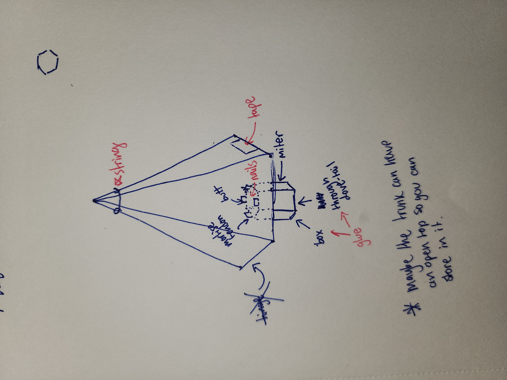
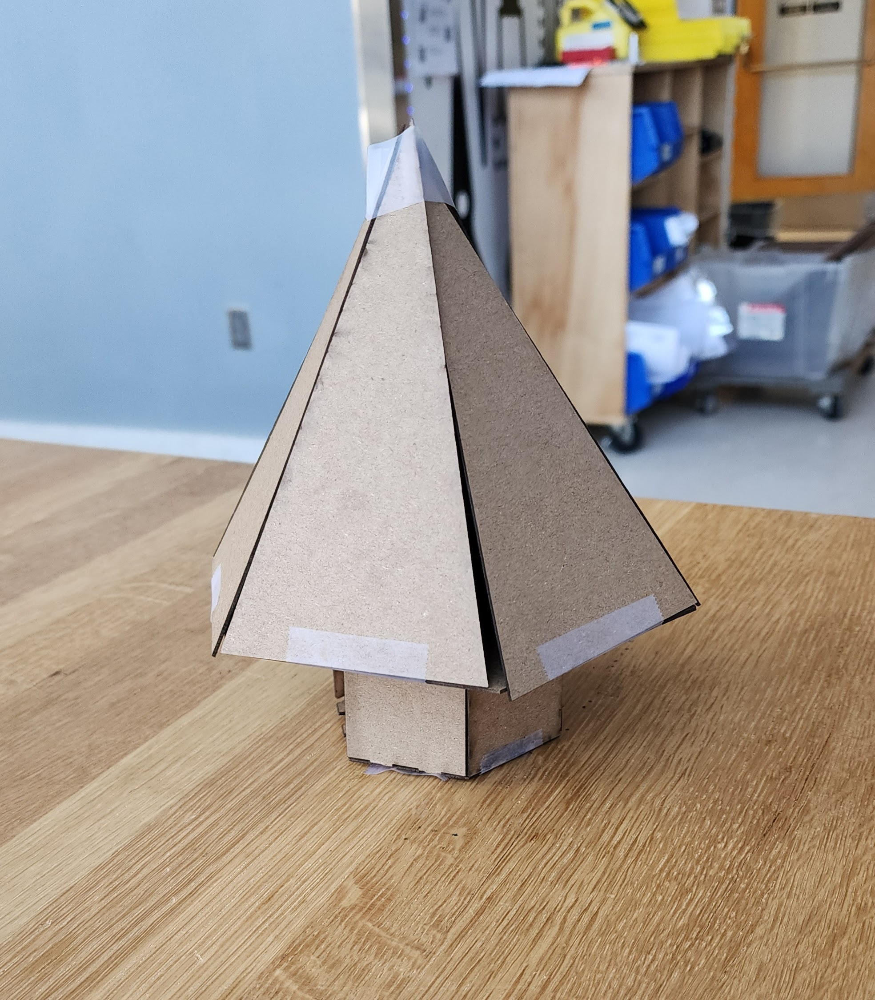
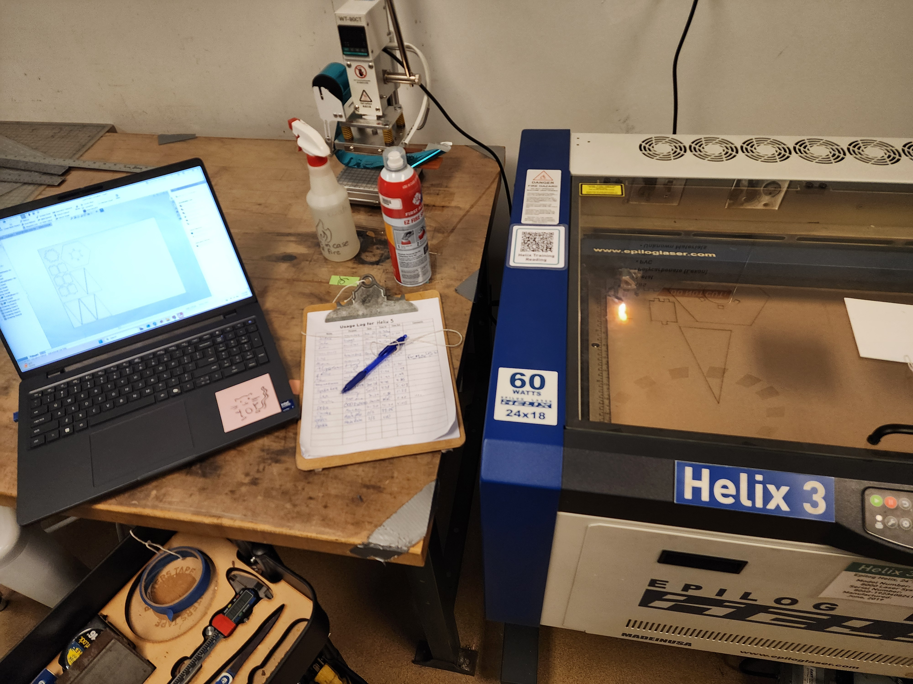
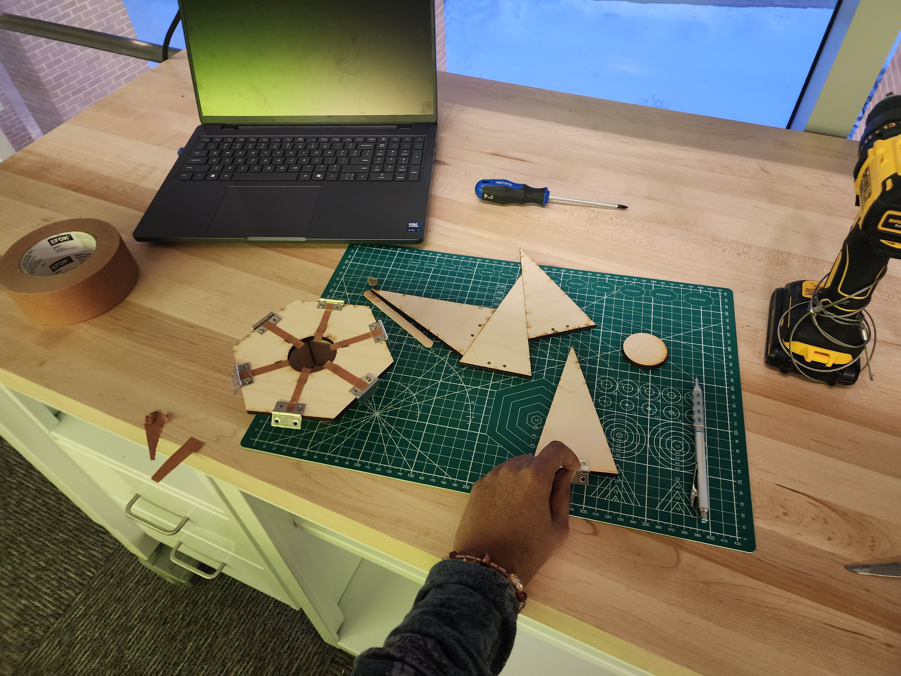
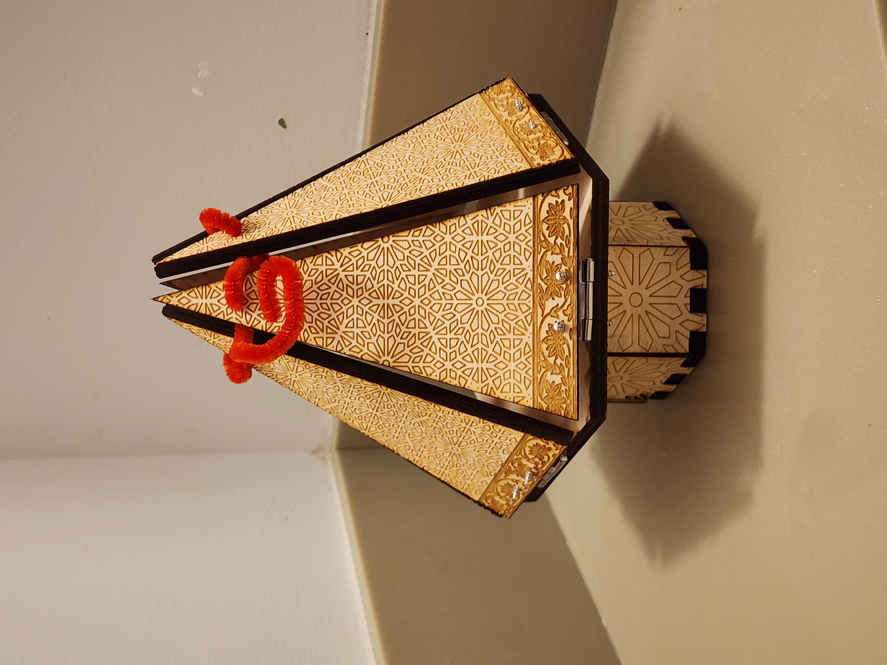

Laser-Cut Cultural Intersection Box
SolidWorks CAD
Laser Rastering
Kerf Testing
Wood Fastening
1. Problem & Story
Design and manufacture an intricate, functional hinged gift container celebrating the cultural intersection of Diwali and Christmas, focusing on laser kerf compensation, raster depth, and hardware integration.
2. Constraints & Requirements
- Laser Kerf Tolerances: Panel joints required tight press-fits without visible gaps.
- Thin Material Fastening: Hardware screws needed secure holding strength without splitting 1/8 inch plywood stock.
3. Design & Iteration Process
Concept development moved from geometric layout sketches to cardboard physical models to evaluate panel motion and hinge placement before final laser cutting.


Engineering Challenges & Solutions
- Panel Gap Control: Uncompensated laser kerf caused loose fits. Performed kerf test cuts and modified SolidWorks dimensional offsets for tight panel alignment.
- Material Splitting: Screws split wood panels during direct insertion; added pre-drilled pilot hole routines to reduce stress concentrations.


4. Results
Completed a structured hinged box featuring detailed surface rastering, seamless panel alignment, and smooth enclosure motion.

5. Lessons Learned & Reflections
Material tolerance testing prior to final fabrication prevents stock waste. Future versions will incorporate built-in wooden latching mechanisms to replace metal hardware fasteners.